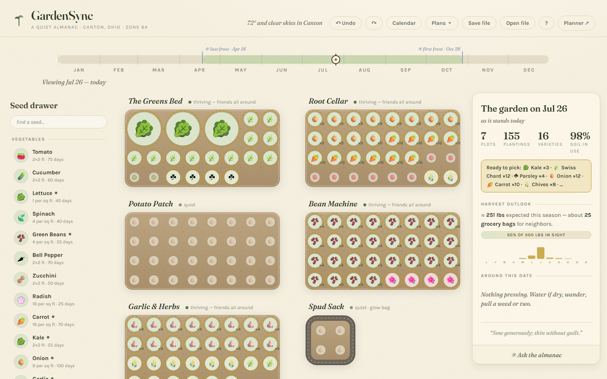
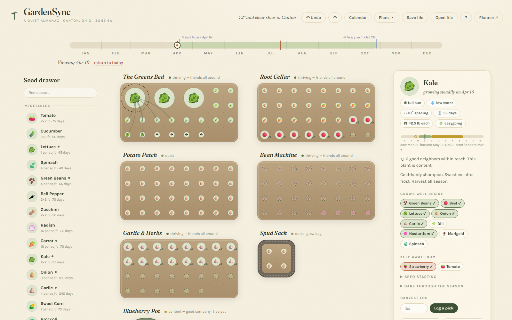
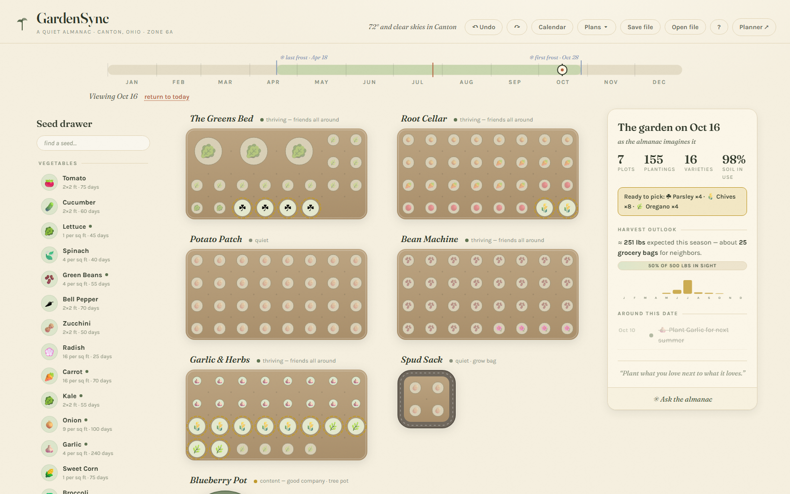
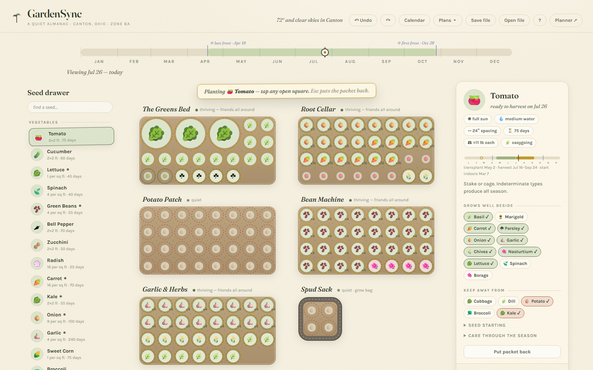
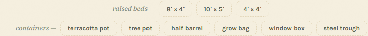
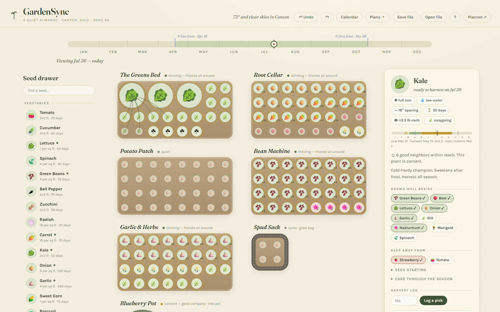
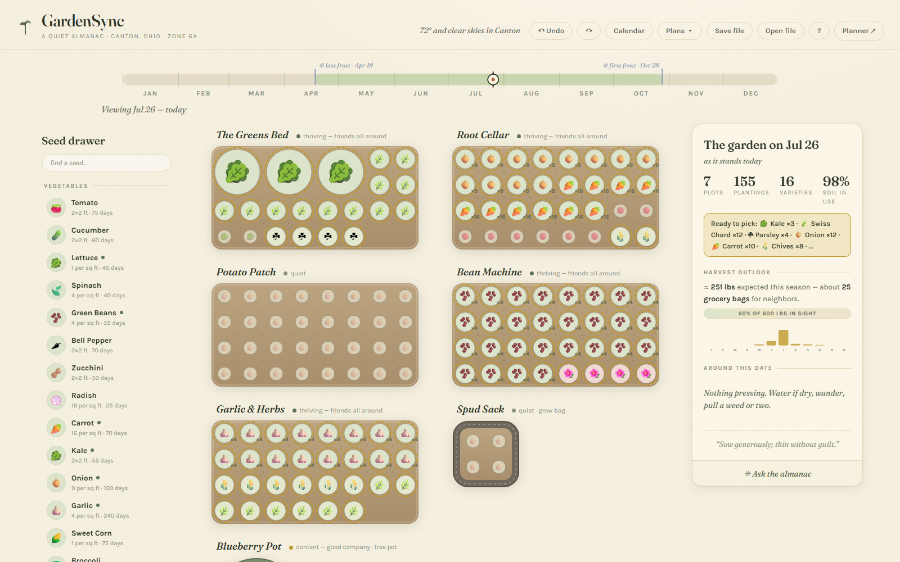
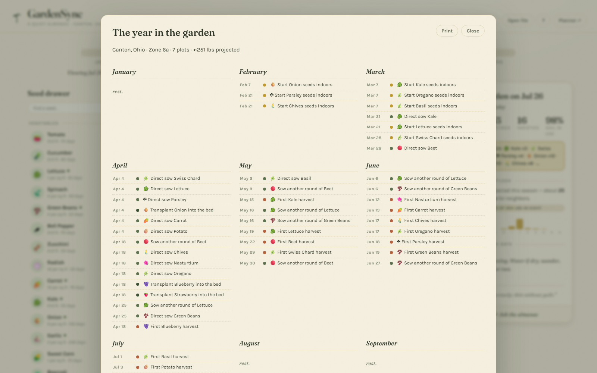
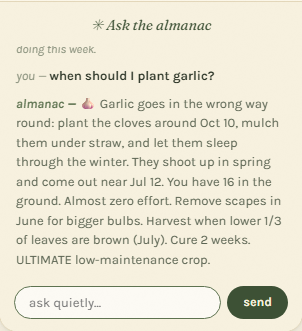
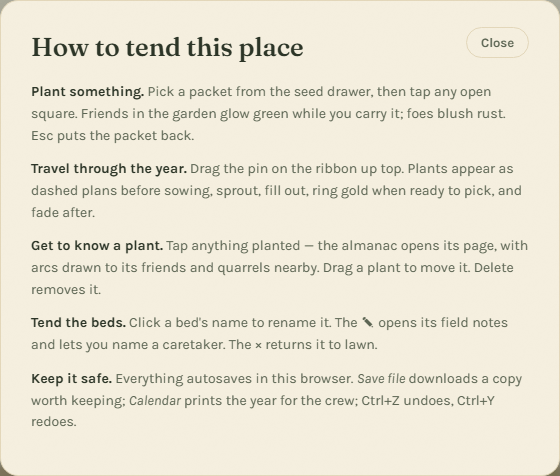

Last frost, April 18. First frost, October 28. One hundred and ninety-three days in between.
A garden you plan by scrubbing through the year.
A Quiet Almanac is a bed planner for the community garden in Canton, Ohio — the beds whose harvest goes to neighbours. You lay out plots square by square from a library of 77 plants, and the whole year sits at the top of the page as a ribbon. Drag the pin to any date and every bed redraws itself as it will look then.
It runs in a browser with no account, no build step and no server. Four files.
Open the almanac — it opens on a planted garden; nothing to set up.

I.
The season ribbon — the year is the control
A plan for a garden is really a plan for a year, so the year is what you hold. The ribbon runs January to December with the Canton frost dates marked and today pinned in clay red. Drag the pin and every plot re-renders at that date: a dashed ghost for what has not been sown yet, a small sprout for what is just up, the full plant in its season, a gold ring on anything ready to pick, and sepia on what is spent.
Below is the same garden twice — the same plan, six months apart, with nothing edited in between.


II.
Companion halos — guidance before you commit
Pick up a seed packet and the garden answers before anything is planted: every friend already in the ground glows moss green, every foe blushes terracotta. Nothing is forbidden — the almanac shows what it knows and lets you plant anyway.
Each plot also keeps a one-line mood under its name, so a bed can tell you it is thriving — friends all around, content — good company, or uneasy — 2 quarrels, without a single red error.

III.
The potting shed — seven kinds of ground
Not every plot is a raised bed, and a planner that assumes otherwise is no use to a garden built out of what people donated. The shed offers the raised bed in three sizes and six containers, each drawn with its own proportions and rim.
- raised bed 8′×4′, 10′×5′, 4′×4′
- terracotta pot
- tree pot blueberries approve
- half barrel
- grow bag good for potatoes
- window box
- steel trough

IV.
The plant page — and its neighbours
Click any plant and the almanac column becomes its page: spacing, days to harvest, sun and water, a year-strip showing when it goes in and when it comes out, how to start it from seed, and — the part that matters when you are standing over a bed — which of its companions and foes are actually in your garden right now.
The library is 77 plants: 45 vegetables, 14 herbs, 15 flowers and 3 fruit. Every one carries spacing in inches, days to harvest, sun and water needs, companions, enemies, seed-starting instructions, care notes, and sow and transplant timing measured against the frost dates.

V.
Harvest outlook — and what was actually picked
A community garden is judged in pounds, so the almanac keeps a running estimate: projected weight for the season, a bar against the 500 lb goal, a month-by-month chart of when that weight lands, and a ready-to-pick line for whatever date you are viewing.
Then you log what you really carried out. Picks are recorded per plant, and the goal bar splits into picked and projected — so by August the estimate stops being a promise and starts being a tally.

VI.
The printable year — for people who are not at a screen
Most of the crew works the beds, not the browser. The calendar lays the whole year out month by month — every sowing, transplant, succession round and first harvest — sized for paper and printed from the same page. Pin it up in the shed.

VII.
Ask the almanac — answering with no key at all
The published build has no API key behind it, so the question box answers offline — from the plant library and from your actual beds. Ask when to plant garlic and it says the crop goes in the wrong way round: cloves around Oct 10, mulched under straw to sleep through the winter, up in spring and out near Jul 12 — and, because it can see the beds, that you have sixteen in the ground already. Then the care notes it holds for garlic: scapes off in June for bigger bulbs, harvest when the lower third of the leaves has browned, cure two weeks. It is not a model improvising about gardening; it is the same data the rest of the page draws from, read back in sentences. This is the answer every visitor gets, and it is the one the almanac was written to give.
To send the question to Claude instead, run the almanac locally and set
localStorage['almanac-claude-key'] to a key of your own. The browser sends that key
with the question; proxy.py only forwards it, and holds no key itself. Your garden and
the date you are viewing ride along in the prompt. If Anthropic does not answer, the offline
almanac picks the question back up.

VIII.
The manual — short, and all of it
No tour, no tooltips waiting to interrupt you. There is one help panel, it fits on a screen, and it is the whole of the documentation the app needs. Every plot is a single tab stop, the arrow keys walk its plants, Delete removes one, and undo goes back as far as you like.

A rebuild, not a fork
This is the second edition of GardenSync. The first — the planner — is still running and still maintained: emerald on black, beds you fill by clicking, companion threads strung between the plants, six workspaces, harvest and volunteer tracking, and Garden Buddy, an assistant that will place plants for you. The almanac shares its 77-plant dataset and its Zone 6a agronomy, and none of its code. The design is new; the research is not.
They are siblings, kept in separate repositories, and each links across to the other. Pick whichever one you would rather stand in.
The planner: gardensync-e4e.pages.dev · github.com/Samizdat-Publications/gardensync
Colophon
Run it yourself
No bundler, no dependencies, no install step. Any static server will serve it; proxy.py
is only needed if you want the question box to reach Claude with a key of your own.
git clone https://github.com/Samizdat-Publications/gardensync-almanac
cd gardensync-almanac
python proxy.py # then open http://localhost:8080- Files
- 4 — index.html, style.css, app.js, plants.js
- Plants
- 77 — 45 veg, 14 herbs, 15 flowers, 3 fruit
- Plot kinds
- 7
- Zone
- 6a — Canton, Ohio
- Season
- 193 days, Apr 18 – Oct 28
- Type
- Fraunces & Karla
Open the almanac or read the source on GitHub.